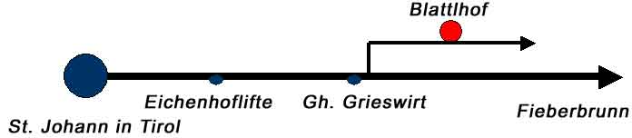

 Von St. Johann kommend fahren Sie ca. 3,5 km in Richtung Fieberbrunn. Dabei fahren Sie an den Eichenhofliften vorbei, und ca. 100 Meter nach dem Gasthof Grieswirt biegen Sie links ab. Nach der Bahnunterführung biegen Sie rechts ab. Dann fahren Sie an der Siedlung vorbei zum Blattlhof.
Hier können Sie sich eine Route für die Anfahrt berechnen lassen. Geben Sie dazu einfach Ihre Adresse ein und klicken Sie auf den Button.